Слои
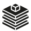
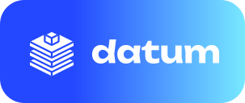
Три объёмные плиты, raw, core и mart, в цветах шкалы со слайда «Как устроена Capibara», а наверху светится один кубик. Модель собирается слоями, наверх выходит одно данное.
Пять идей с характером в визуальной системе кейса: градиенты обложки и шкалы, глянец их 3D-курсора, пиксель скрепки, реплика со слайдов. Каждый знак показан в цвете, в один цвет, белым на градиенте обложки, в 32 и 16 px и с надписью. Ниже отдельно: шрифт для самой надписи Datum, не Inter и не PT Serif; знак и шрифт можно комбинировать.


Три объёмные плиты, raw, core и mart, в цветах шкалы со слайда «Как устроена Capibara», а наверху светится один кубик. Модель собирается слоями, наверх выходит одно данное.
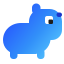
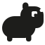
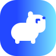
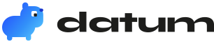
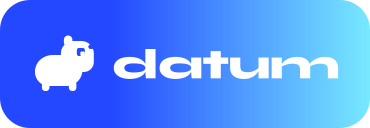
Капибара-«буханка» из скруглённых форм в градиенте обложки, глаз — квадрат-данное. Сразу считывается заказчиком, отличает от безликих дата-логотипов и становится талисманом для пустых состояний.
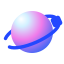
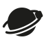
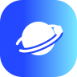
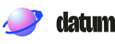
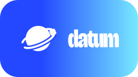
Глянцевая сфера в материале их 3D-курсора (розовый, белый блик, синий), вокруг кобальтовая орбита и один квадрат: все данные вращаются вокруг одной точки. Ближе всего к 3D-иллюстрациям кейса.
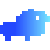
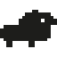
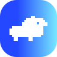
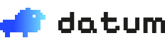
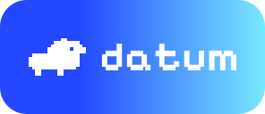
Капибара на сетке 18 × 12, нарисованная так же, как скрепка на обложке RWB, в градиенте обложки. Глаз — пустая клетка. Пиксель — родной язык фавикона, поэтому знак живёт даже в 16 px.
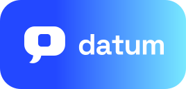
Пузырь чата с хвостиком из их слайдов, но в глянцевом материале курсора; внутри кобальтовый квадрат с бликом, ответ одной цифрой. Прямо называет продукт: дашборд, у которого можно спросить.
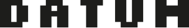
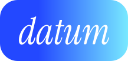